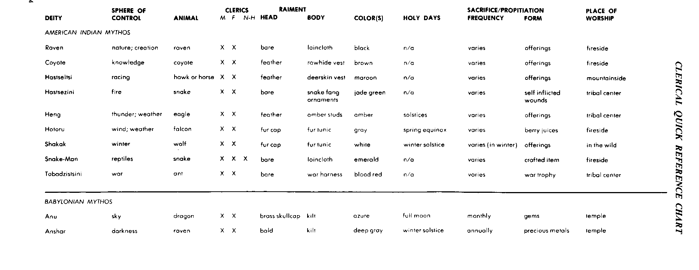
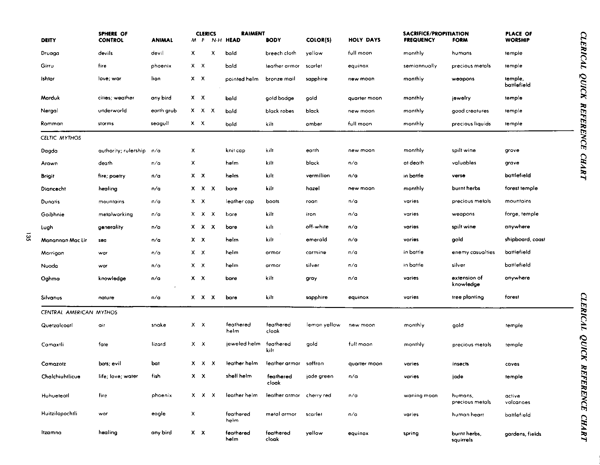
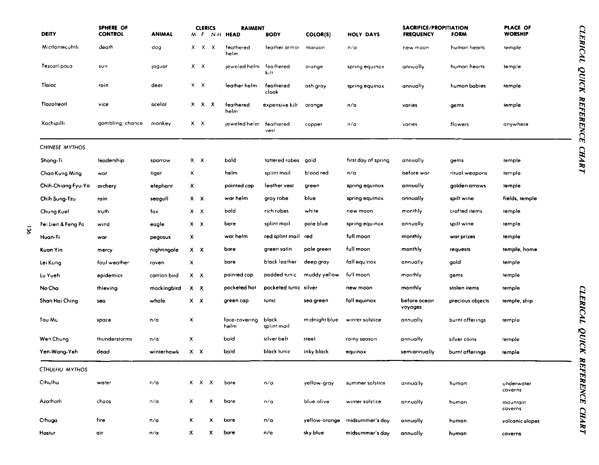
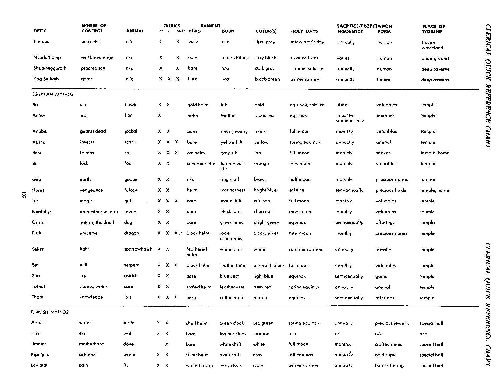
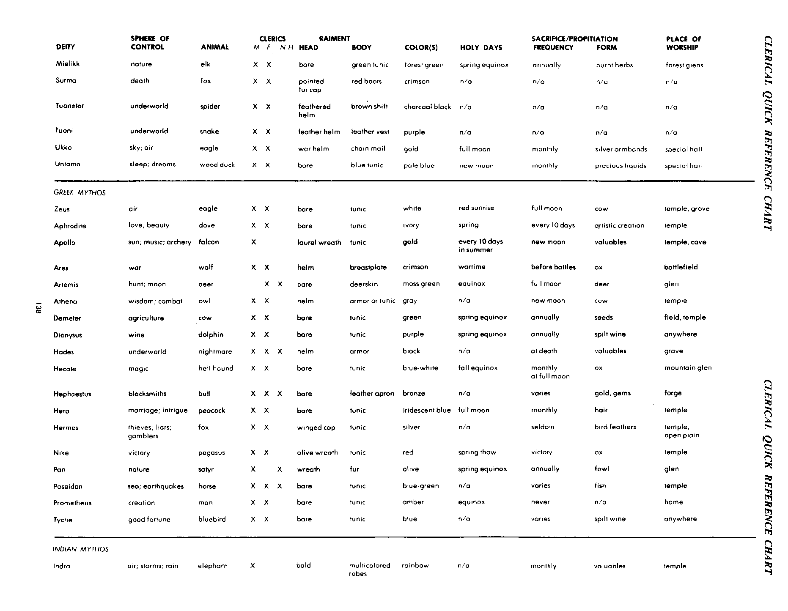
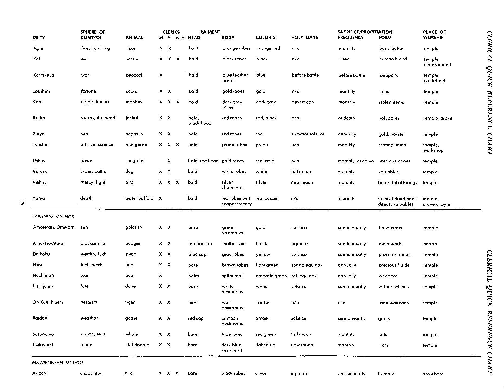
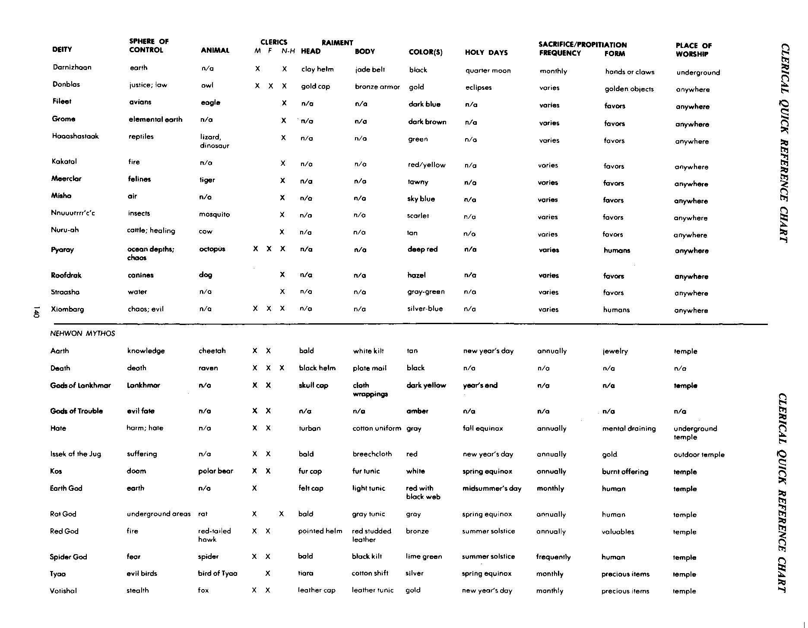
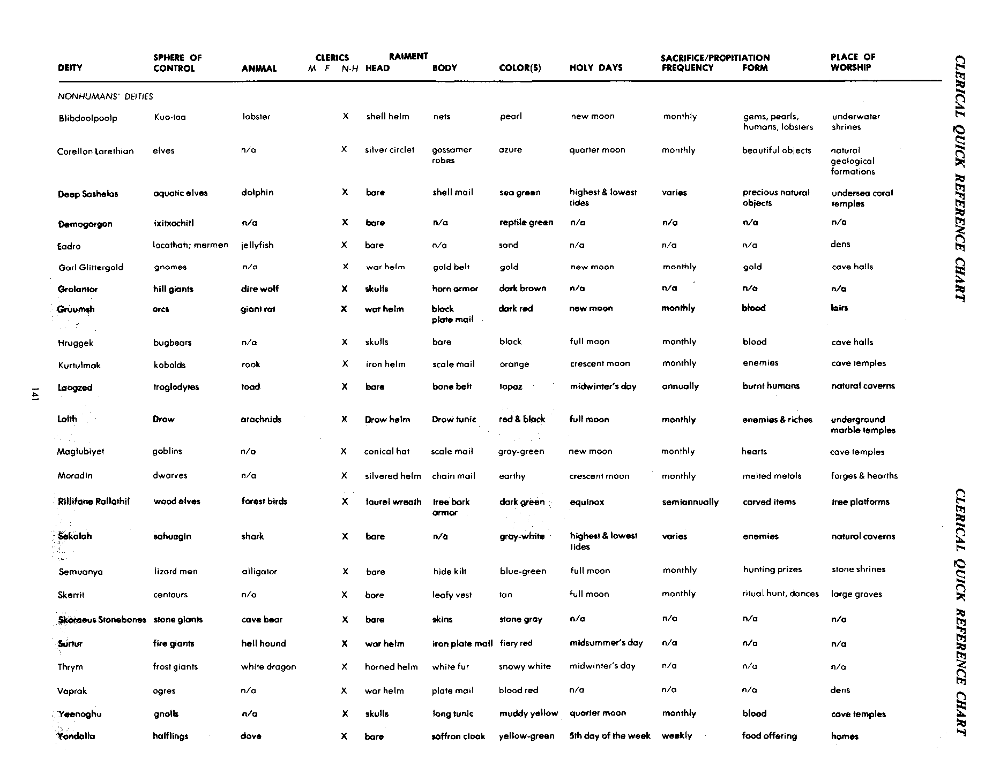
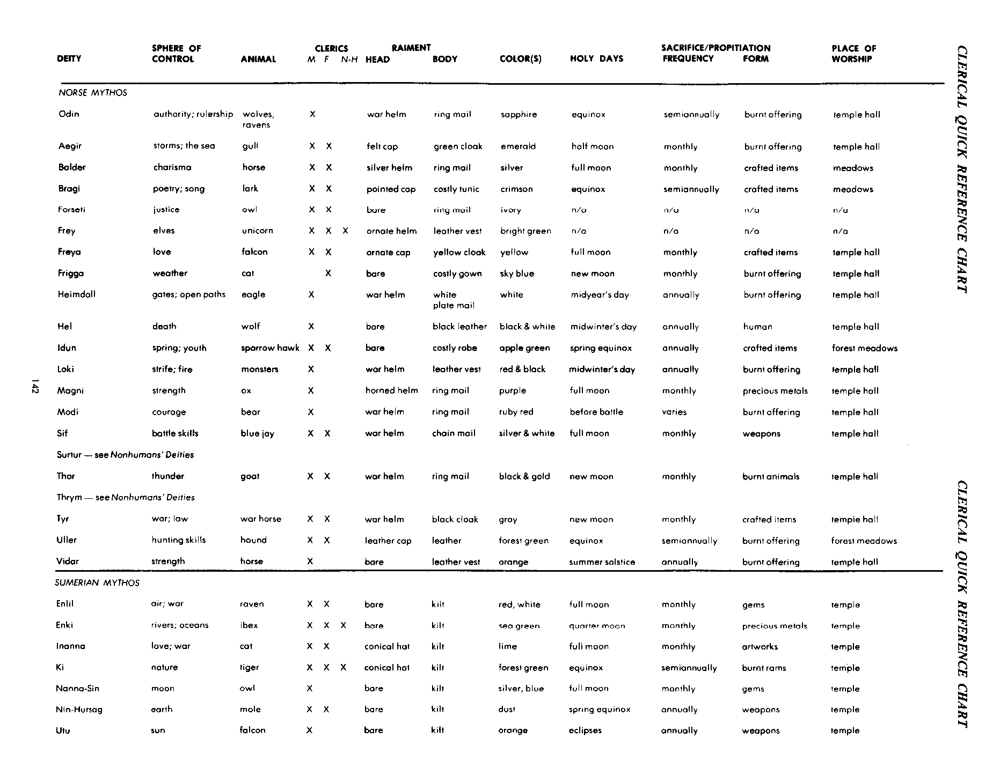

附录三：牧师速查表 · Appendix 3: Clerical Quick-Reference Charts
以下逐项保留原表的数据栏；每个神系的主神列在最前，其余按英文名称排列，并非所有神祇混排为一张字母表。
本表供需要查阅牧师信仰细节时速查。所列内容只是指导，同一神祇的所有牧师未必穿着完全相同；神殿通常用颜色、衬里或条纹的变化区分等级。神殿或神祇可随时指定特别祭祀与圣日。
支配领域指神祇对某一事物、状况或元素行使的控制；关联动物指与该神最常相联或被视为神圣的动物，牧师常会保护它们，并非所有神祇都有对应动物。牧师资格中 M 为男性、F 为女性、N-H 为非人类；“是”对应原表 X，“—”对应空白。
服饰包括长袍、头饰、发型、文身、化妆、身体变形（例如缺口耳或改变头形）、饰品、首饰与鞋履。颜色可用于仪式长袍、祭坛帷幕、蜡烛与圣旗。圣日是该神祇及其信徒最重要的节日；当日的献祭、仪式和祈祷较可能得到神祇注意，但受到注意并不等于祈求获准。
祭祀／献礼列出规定的频率和形式。虔诚信徒还应在感恩（例如冒险生还）、悔罪或求恩（例如消除饥荒）时缴纳什一税和献祭。祭品可为动物、怪物、人类或非人类、食物和作物、财物、魔法物品、熏香、香水或服务；献祭方式可为奠酒、焚烧、活体剖献、埋葬、浸入圣水或投入深坑等。礼拜地点指牧师独自或与会众共同礼拜时最常使用的天然场所或人造建筑。
原表的 n/a 译为“不适用”；神祇专名保留英文以便与正文、原表交叉查找。每个神系分为两张表，所有原始栏位均保留。
北美印第安神话 American Indian Mythos
领域、动物与牧师资格
| 神祇 | 支配领域 | 关联动物 | 男性 M | 女性 F | 非人类 N-H |
|---|---|---|---|---|---|
| Raven | 自然； 创造 | 渡鸦 | 是 | 是 | — |
| Coyote | 知识 | 郊狼 | 是 | 是 | — |
| Hastseltsi | 竞速 | 鹰或马 | 是 | 是 | — |
| Hastsezini | 火 | 蛇 | 是 | 是 | — |
| Heng | 雷； 天气 | 鹰 | 是 | 是 | — |
| Hotoru | 风； 天气 | 隼 | 是 | 是 | — |
| Shakak | 冬季 | 狼 | 是 | 是 | — |
| Snake-Man | 爬行动物 | 蛇 | 是 | 是 | 是 |
| Tobadzistsini | 战争 | 蚂蚁 | 是 | 是 | — |
服饰、圣日、祭祀与礼拜地点
| 神祇 | 头饰 | 衣着 | 颜色 | 圣日 | 祭祀频率 | 祭品／献礼形式 | 礼拜地点 |
|---|---|---|---|---|---|---|---|
| Raven | 不戴头饰／裸露 | 腰布 | 黑色 | 不适用 | 不定 | 供品 | 火边 |
| Coyote | 羽毛 | 生皮背心 | 棕色 | 不适用 | 不定 | 供品 | 火边 |
| Hastseltsi | 羽毛 | 鹿皮背心 | 栗色 | 不适用 | 不定 | 供品 | 山坡 |
| Hastsezini | 不戴头饰／裸露 | 蛇牙饰物 | 玉绿 | 不适用 | 不定 | 自伤 | 部落中心 |
| Heng | 羽毛 | 琥珀铆饰 | 琥珀色 | 夏至与冬至 | 不定 | 供品 | 部落中心 |
| Hotoru | 皮帽 | 皮袍 | 灰色 | 春分 | 不定 | 浆果汁 | 火边 |
| Shakak | 皮帽 | 皮袍 | 白色 | 冬至 | 不定 (冬季) | 供品 | 荒野 |
| Snake-Man | 不戴头饰／裸露 | 腰布 | 翡翠绿 | 不适用 | 不定 | 工艺品 | 火边 |
| Tobadzistsini | 不戴头饰／裸露 | 战斗束带 | 血红 | 不适用 | 不定 | 战利品 | 部落中心 |
巴比伦神话 Babylonian Mythos
领域、动物与牧师资格
| 神祇 | 支配领域 | 关联动物 | 男性 M | 女性 F | 非人类 N-H |
|---|---|---|---|---|---|
| Anu | 天空 | 龙 | 是 | 是 | — |
| Anshar | 黑暗 | 渡鸦 | 是 | 是 | — |
| Druaga | 魔鬼 | 魔鬼 | 是 | — | 是 |
| Girru | 火 | 凤凰 | 是 | 是 | — |
| Ishtar | 爱情； 战争 | 狮 | 是 | 是 | — |
| Marduk | 城市； 天气 | 任何鸟类 | 是 | 是 | — |
| Nergal | 冥界 | 土蛴螬 | 是 | 是 | 是 |
| Ramman | 风暴 | 海鸥 | 是 | 是 | — |
服饰、圣日、祭祀与礼拜地点
| 神祇 | 头饰 | 衣着 | 颜色 | 圣日 | 祭祀频率 | 祭品／献礼形式 | 礼拜地点 |
|---|---|---|---|---|---|---|---|
| Anu | 黄铜贴头小帽 | 短裙 | 蔚蓝 | 满月 | 每月 | 宝石 | 神殿 |
| Anshar | 剃光头 | 短裙 | 深灰 | 冬至 | 每年 | 贵重金属 | 神殿 |
| Druaga | 剃光头 | 兜裆布 | 黄色 | 满月 | 每月 | 人牲 | 神殿 |
| Girru | 剃光头 | 皮甲 | 猩红 | 春分与秋分 | 每半年 | 贵重金属 | 神殿 |
| Ishtar | 尖顶盔 | 青铜锁甲 | 蓝宝石色 | 朔月 | 每月 | 武器 | 神殿、 战场 |
| Marduk | 剃光头 | 金徽章 | 金色 | 弦月 | 每月 | 首饰 | 神殿 |
| Nergal | 剃光头 | 黑色 长袍 | 黑色 | 朔月 | 每月 | 善良生物 | 神殿 |
| Ramman | 剃光头 | 短裙 | 琥珀色 | 满月 | 每月 | 珍贵液体 | 神殿 |
凯尔特神话 Celtic Mythos
领域、动物与牧师资格
| 神祇 | 支配领域 | 关联动物 | 男性 M | 女性 F | 非人类 N-H |
|---|---|---|---|---|---|
| Dagda | 权威； 统治 | 不适用 | 是 | — | — |
| Arawn | 死亡 | 不适用 | 是 | — | — |
| Brigit | 火； 诗歌 | 不适用 | 是 | 是 | — |
| Diancecht | 治疗 | 不适用 | 是 | 是 | 是 |
| Dunatis | 山地 | 不适用 | 是 | 是 | — |
| Goibhnie | 金属加工 | 不适用 | 是 | 是 | 是 |
| Lugh | 万事 | 不适用 | 是 | 是 | 是 |
| Manannan Mac Lir | 海洋 | 不适用 | 是 | 是 | — |
| Morrigan | 战争 | 不适用 | 是 | 是 | — |
| Nuada | 战争 | 不适用 | 是 | 是 | — |
| Oghma | 知识 | 不适用 | 是 | 是 | — |
| Silvanus | 自然 | 不适用 | 是 | 是 | 是 |
服饰、圣日、祭祀与礼拜地点
| 神祇 | 头饰 | 衣着 | 颜色 | 圣日 | 祭祀频率 | 祭品／献礼形式 | 礼拜地点 |
|---|---|---|---|---|---|---|---|
| Dagda | 针织帽 | 短裙 | 土色 | 朔月 | 每月 | 奠酒 | 林苑 |
| Arawn | 头盔 | 短裙 | 黑色 | 不适用 | 死亡时 | 贵重物品 | 坟墓 |
| Brigit | 头盔 | 短裙 | 朱红 | 不适用 | 战斗中 | 诗歌 | 战场 |
| Diancecht | 不戴头饰／裸露 | 短裙 | 榛褐色 | 朔月 | 每月 | 焚烧草药 | 林中神殿 |
| Dunatis | 皮帽 | 靴 | 杂毛棕 | 不适用 | 不定 | 贵重金属 | 山地 |
| Goibhnie | 不戴头饰／裸露 | 短裙 | 铁灰 | 不适用 | 不定 | 武器 | 锻炉、 神殿 |
| Lugh | 不戴头饰／裸露 | 短裙 | 灰白 | 不适用 | 不定 | 奠酒 | 任何地点 |
| Manannan Mac Lir | 头盔 | 短裙 | 翡翠绿 | 不适用 | 不定 | 黄金 | 船上、 海岸 |
| Morrigan | 头盔 | 护甲 | 胭脂红 | 不适用 | 战斗中 | 敌军死伤 | 战场 |
| Nuada | 头盔 | 护甲 | 银色 | 不适用 | 战斗中 | 白银 | 战场 |
| Oghma | 不戴头饰／裸露 | 短裙 | 灰色 | 不适用 | 不定 | 扩展知识 | 任何地点 |
| Silvanus | 不戴头饰／裸露 | 短裙 | 蓝宝石色 | 春分与秋分 | 不定 | 植树 | 森林 |
中美洲神话 Central American Mythos
领域、动物与牧师资格
| 神祇 | 支配领域 | 关联动物 | 男性 M | 女性 F | 非人类 N-H |
|---|---|---|---|---|---|
| Quetzalcoatl | 空气 | 蛇 | 是 | 是 | — |
| Camaxtli | 命运 | 蜥蜴 | 是 | 是 | — |
| Camazotz | 蝙蝠； 邪恶 | 蝙蝠 | 是 | 是 | 是 |
| Chalchiuhtlicue | 生命； 爱情； 水 | 鱼 | 是 | 是 | — |
| Huhueteotl | 火 | 凤凰 | 是 | 是 | 是 |
| Huitzilopochtli | 战争 | 鹰 | 是 | — | — |
| Itzamna | 治疗 | 任何鸟类 | 是 | 是 | — |
| Mictlantecuhtli | 死亡 | 狗 | 是 | 是 | 是 |
| Tezcatlipoca | 太阳 | 美洲豹 | 是 | 是 | — |
| Tlaloc | 雨 | 鹿 | 是 | 是 | — |
| Tlazolteotl | 恶行 | 虎猫 | 是 | 是 | 是 |
| Xochipilli | 赌博； 机运 | 猴 | 是 | 是 | — |
服饰、圣日、祭祀与礼拜地点
| 神祇 | 头饰 | 衣着 | 颜色 | 圣日 | 祭祀频率 | 祭品／献礼形式 | 礼拜地点 |
|---|---|---|---|---|---|---|---|
| Quetzalcoatl | 羽饰头盔 | 羽毛披风 | 柠檬黄 | 朔月 | 每月 | 黄金 | 神殿 |
| Camaxtli | 珠宝饰盔 | 羽饰短裙 | 金色 | 满月 | 每月 | 贵重金属 | 神殿 |
| Camazotz | 皮盔 | 皮甲 | 藏红花黄 | 弦月 | 不定 | 昆虫 | 洞穴 |
| Chalchiuhtlicue | 贝壳头盔 | 羽毛披风 | 玉绿 | 不适用 | 不定 | 玉石 | 神殿 |
| Huhueteotl | 皮盔 | 皮甲 | 樱桃红 | 不适用 | 亏月时 | 人牲、 贵重金属 | 活火山 |
| Huitzilopochtli | 羽饰头盔 | 金属护甲 | 猩红 | 不适用 | 不定 | 人心 | 战场 |
| Itzamna | 羽饰头盔 | 羽毛披风 | 黄色 | 春分与秋分 | 春季 | 焚烧草药、 松鼠 | 花园、 田野 |
| Mictlantecuhtli | 羽饰头盔 | 皮甲 | 栗色 | 不适用 | 朔月 | 人心 | 神殿 |
| Tezcatlipoca | 珠宝饰盔 | 羽饰短裙 | 橙色 | 春分 | 每年 | 人心 | 神殿 |
| Tlaloc | 皮盔 | 羽毛披风 | 灰烬色 | 春分 | 每年 | 人类婴儿 | 神殿 |
| Tlazolteotl | 羽饰头盔 | 昂贵短裙 | 橙色 | 不适用 | 不定 | 宝石 | 神殿 |
| Xochipilli | 珠宝饰盔 | 羽饰背心 | 铜色 | 不适用 | 不定 | 花 | 任何地点 |
中国神话 Chinese Mythos
领域、动物与牧师资格
| 神祇 | 支配领域 | 关联动物 | 男性 M | 女性 F | 非人类 N-H |
|---|---|---|---|---|---|
| Shang-Ti | 领导 | 麻雀 | 是 | 是 | — |
| Chao Kung Ming | 战争 | 虎 | 是 | — | — |
| Chih-Chiang Fyu-Ya | 射术 | 象 | 是 | — | — |
| Chih Sung-Tzu | 雨 | 海鸥 | 是 | 是 | — |
| Chung Kuel | 真理 | 狐狸 | 是 | 是 | — |
| Fei lien & Feng Po | 风 | 鹰 | 是 | 是 | — |
| Huan-Ti | 战争 | 飞马 | 是 | — | — |
| Kuan Yin | 仁慈 | 夜莺 | 是 | 是 | — |
| Lei Kung | 恶劣天气 | 渡鸦 | 是 | — | — |
| Lu Yueh | 瘟疫 | 食腐鸟 | 是 | 是 | — |
| NaCho | 偷窃 | 嘲鸫 | 是 | 是 | — |
| Shan Hoi Ching | 海洋 | 鲸 | 是 | 是 | — |
| Tau Mu | 空间 | 不适用 | 是 | — | — |
| Wen Chung | 雷暴 | 不适用 | 是 | — | — |
| Yen-Wang-Yeh | 死者 | 冬鹰 | 是 | 是 | — |
服饰、圣日、祭祀与礼拜地点
| 神祇 | 头饰 | 衣着 | 颜色 | 圣日 | 祭祀频率 | 祭品／献礼形式 | 礼拜地点 |
|---|---|---|---|---|---|---|---|
| Shang-Ti | 剃光头 | 破烂长袍 | 金色 | 春季第一日 | 每年 | 宝石 | 神殿 |
| Chao Kung Ming | 头盔 | 片甲 | 血红 | 不适用 | 开战前 | 仪式武器 | 神殿 |
| Chih-Chiang Fyu-Ya | 尖顶帽 | 皮背心 | 绿色 | 春分 | 每年 | 金箭 | 神殿 |
| Chih Sung-Tzu | 战盔 | 灰色 长袍 | 蓝色 | 春分 | 每年 | 奠酒 | 田野、 神殿 |
| Chung Kuel | 剃光头 | 华贵长袍 | 白色 | 朔月 | 每月 | 工艺品 | 神殿 |
| Fei lien & Feng Po | 不戴头饰／裸露 | 片甲 | 淡蓝 | 春分 | 每年 | 奠酒 | 神殿 |
| Huan-Ti | 战盔 | 红色 片甲 | 红色 | 满月 | 每月 | 战利品 | 神殿 |
| Kuan Yin | 不戴头饰／裸露 | 绿色缎衣 | 淡绿 | 满月 | 每月 | 祈求 | 神殿、 家中 |
| Lei Kung | 不戴头饰／裸露 | 黑色 皮革 | 深灰 | 秋分 | 每年 | 黄金 | 神殿 |
| Lu Yueh | 尖顶帽 | 填棉短袍 | 浊黄 | 满月 | 每月 | 宝石 | 神殿 |
| NaCho | 多口袋帽 | 多口袋短袍 | 银色 | 朔月 | 每月 | 偷来的物品 | 神殿 |
| Shan Hoi Ching | 绿帽 | 短袍 | 海绿 | 秋分 | 远洋航行前 | 珍贵物品 | 神殿、 船上 |
| Tau Mu | 覆面盔 | 黑色 片甲 | 午夜蓝 | 冬至 | 每年 | 燔祭 | 神殿 |
| Wen Chung | 剃光头 | 银色 腰带 | 钢色 | 雨季 | 每年 | 银币 | 神殿 |
| Yen-Wang-Yeh | 剃光头 | 黑色 短袍 | 墨黑 | 春分与秋分 | 每半年 | 燔祭 | 神殿 |
克苏鲁神话 Cthulhu Mythos
领域、动物与牧师资格
| 神祇 | 支配领域 | 关联动物 | 男性 M | 女性 F | 非人类 N-H |
|---|---|---|---|---|---|
| Cthulhu | 水 | 不适用 | 是 | 是 | 是 |
| Azathoth | 混沌 | 不适用 | 是 | — | 是 |
| Cthuga | 火 | 不适用 | 是 | — | 是 |
| Hastur | 空气 | 不适用 | 是 | — | 是 |
| Ithaqua | 空气 (寒冷) | 不适用 | 是 | — | 是 |
| Nyarlathotep | 邪恶知识 | 不适用 | 是 | — | 是 |
| Shub-Niggurath | 繁衍 | 不适用 | 是 | — | 是 |
| Yog-Sothoth | 门户 | 不适用 | 是 | 是 | 是 |
服饰、圣日、祭祀与礼拜地点
| 神祇 | 头饰 | 衣着 | 颜色 | 圣日 | 祭祀频率 | 祭品／献礼形式 | 礼拜地点 |
|---|---|---|---|---|---|---|---|
| Cthulhu | 不戴头饰／裸露 | 不适用 | 黄色-灰色 | 夏至 | 每年 | 人牲 | 水下洞窟 |
| Azathoth | 不戴头饰／裸露 | 不适用 | 蓝色／橄榄色 | 冬至 | 每年 | 人牲 | 山中洞窟 |
| Cthuga | 不戴头饰／裸露 | 不适用 | 黄色-橙色 | 仲夏日 | 每年 | 人牲 | 火山山坡 |
| Hastur | 不戴头饰／裸露 | 不适用 | 天蓝 | 仲夏日 | 每年 | 人牲 | 洞窟 |
| Ithaqua | 不戴头饰／裸露 | 不适用 | 浅灰 | 仲冬日 | 每年 | 人牲 | 冰冻荒原 |
| Nyarlathotep | 不戴头饰／裸露 | 黑色 衣物 | 墨黑 | 日食 | 不定 | 人牲 | 地下 |
| Shub-Niggurath | 不戴头饰／裸露 | 不适用 | 深灰 | 夏至 | 每年 | 人牲 | 深处洞窟 |
| Yog-Sothoth | 不戴头饰／裸露 | 不适用 | 黑色-绿色 | 冬至 | 每年 | 人牲 | 深处洞窟 |
埃及神话 Egyptian Mythos
领域、动物与牧师资格
| 神祇 | 支配领域 | 关联动物 | 男性 M | 女性 F | 非人类 N-H |
|---|---|---|---|---|---|
| Ra | 太阳 | 鹰 | 是 | 是 | — |
| Anhur | 战争 | 狮 | 是 | — | — |
| Anubis | 守护死者 | 胡狼 | 是 | 是 | — |
| Apshai | 昆虫 | 圣甲虫 | 是 | 是 | 是 |
| Bast | 猫科动物 | 猫 | 是 | 是 | 是 |
| Bes | 幸运 | 狐狸 | 是 | 是 | — |
| Geb | 大地 | 鹅 | 是 | 是 | — |
| Horus | 复仇 | 隼 | 是 | 是 | — |
| Isis | 魔法 | 鸥 | 是 | 是 | 是 |
| Nephthys | 保护； 财富 | 渡鸦 | 是 | 是 | — |
| Osiris | 自然； 死者 | 狗 | 是 | 是 | — |
| Ptah | 宇宙 | 龙 | 是 | 是 | 是 |
| Seker | 光明 | 雀鹰 | 是 | 是 | — |
| Set | 邪恶 | 蛇 | 是 | 是 | 是 |
| Shu | 天空 | 鸵鸟 | 是 | 是 | — |
| Tefnut | 风暴； 水 | 鲤鱼 | 是 | 是 | — |
| Thoth | 知识 | 朱鹭 | 是 | 是 | 是 |
服饰、圣日、祭祀与礼拜地点
| 神祇 | 头饰 | 衣着 | 颜色 | 圣日 | 祭祀频率 | 祭品／献礼形式 | 礼拜地点 |
|---|---|---|---|---|---|---|---|
| Ra | 金色 头盔 | 短裙 | 金色 | 春分与秋分、 夏至与冬至 | 经常 | 贵重物品 | 神殿 |
| Anhur | 头盔 | 皮革 | 血红 | 春分与秋分 | 战斗中； 每半年 | 敌人 | 神殿 |
| Anubis | 不戴头饰／裸露 | 缟玛瑙首饰 | 黑色 | 满月 | 每月 | 贵重物品 | 神殿 |
| Apshai | 不戴头饰／裸露 | 黄色 短裙 | 黄色 | 春分 | 每年 | 动物 | 神殿 |
| Bast | 猫形头盔 | 灰色 短裙 | 黄褐色 | 满月 | 每月 | 蛇 | 神殿、 家中 |
| Bes | 镀银头盔 | 皮背心、 短裙 | 橙色 | 朔月 | 每月 | 贵重物品 | 神殿 |
| Geb | 不适用 | 环甲 | 棕色 | 半月 | 每月 | 宝石 | 神殿 |
| Horus | 头盔 | 战斗束带 | 亮蓝 | 夏至与冬至 | 每半年 | 珍贵液体 | 神殿、 家中 |
| Isis | 不戴头饰／裸露 | 猩红 短裙 | 深红 | 满月 | 每月 | 贵重物品 | 神殿 |
| Nephthys | 不戴头饰／裸露 | 黑色 短袍 | 炭灰 | 朔月 | 每月 | 贵重物品 | 神殿 |
| Osiris | 不戴头饰／裸露 | 绿色 短袍 | 亮绿 | 春分与秋分 | 每半年 | 供品 | 神殿 |
| Ptah | 黑色 头盔 | 玉饰 | 黑色、 银色 | 朔月 | 每月 | 宝石 | 神殿 |
| Seker | 羽饰头盔 | 白色 短袍 | 白色 | 夏至 | 每年 | 首饰 | 神殿 |
| Set | 黑色 头盔 | 皮短袍 | 翡翠绿、 黑色 | 满月 | 每月 | 贵重物品 | 神殿 |
| Shu | 不戴头饰／裸露 | 蓝色 背心 | 浅蓝 | 春分与秋分 | 每半年 | 宝石 | 神殿 |
| Tefnut | 鳞甲头盔 | 皮背心 | 锈红 | 春分 | 每年 | 动物 | 神殿 |
| Thoth | 不戴头饰／裸露 | 棉布 短袍 | 紫色 | 春分与秋分 | 每半年 | 供品 | 神殿 |
芬兰神话 Finnish Mythos
领域、动物与牧师资格
| 神祇 | 支配领域 | 关联动物 | 男性 M | 女性 F | 非人类 N-H |
|---|---|---|---|---|---|
| Ahto | 水 | 龟 | 是 | 是 | — |
| Hiisi | 邪恶 | 狼 | 是 | 是 | — |
| Ilmatar | 母性 | 鸽 | — | 是 | — |
| Kiputytto | 疾病 | 蠕虫 | 是 | 是 | — |
| Loviatar | 痛苦 | 苍蝇 | 是 | 是 | — |
| Mielikki | 自然 | 麋鹿 | 是 | 是 | — |
| Surma | 死亡 | 狐狸 | 是 | 是 | — |
| Tuonetar | 冥界 | 蜘蛛 | 是 | 是 | — |
| Tuoni | 冥界 | 蛇 | 是 | 是 | — |
| Ukko | 天空； 空气 | 鹰 | 是 | 是 | — |
| Untamo | 睡眠； 梦境 | 林鸳鸯 | 是 | 是 | — |
服饰、圣日、祭祀与礼拜地点
| 神祇 | 头饰 | 衣着 | 颜色 | 圣日 | 祭祀频率 | 祭品／献礼形式 | 礼拜地点 |
|---|---|---|---|---|---|---|---|
| Ahto | 贝壳头盔 | 绿色 披风 | 海绿 | 春分 | 每年 | 贵重首饰 | 专用大厅 |
| Hiisi | 不戴头饰／裸露 | 皮革 披风 | 栗色 | 不适用 | 不适用 | 不适用 | 不适用 |
| Ilmatar | 不戴头饰／裸露 | 白色 衬袍 | 白色 | 满月 | 每月 | 工艺品 | 专用大厅 |
| Kiputytto | 银色 头盔 | 黑色 衬袍 | 灰色 | 秋分 | 每年 | 金杯 | 专用大厅 |
| Loviatar | 白色 皮帽 | 象牙色 披风 | 象牙色 | 冬至 | 每年 | 燔祭 | 专用大厅 |
| Mielikki | 不戴头饰／裸露 | 绿色 短袍 | 森林绿 | 春分 | 每年 | 焚烧草药 | 林间幽谷 |
| Surma | 尖顶皮帽 | 红色 靴 | 深红 | 不适用 | 不适用 | 不适用 | 不适用 |
| Tuonetar | 羽饰头盔 | 棕色 衬袍 | 炭黑 | 不适用 | 不适用 | 不适用 | 不适用 |
| Tuoni | 皮盔 | 皮背心 | 紫色 | 不适用 | 不适用 | 不适用 | 不适用 |
| Ukko | 战盔 | 链甲 | 金色 | 满月 | 每月 | 银臂环 | 专用大厅 |
| Untamo | 不戴头饰／裸露 | 蓝色 短袍 | 淡蓝 | 朔月 | 每月 | 珍贵液体 | 专用大厅 |
希腊神话 Greek Mythos
领域、动物与牧师资格
| 神祇 | 支配领域 | 关联动物 | 男性 M | 女性 F | 非人类 N-H |
|---|---|---|---|---|---|
| Zeus | 空气 | 鹰 | 是 | 是 | — |
| Aphrodite | 爱情； 美丽 | 鸽 | 是 | 是 | — |
| Apollo | 太阳； 音乐； 射术 | 隼 | 是 | — | — |
| Ares | 战争 | 狼 | 是 | 是 | — |
| Artemis | 狩猎； 月亮 | 鹿 | — | 是 | 是 |
| Athena | 智慧； 战斗 | 猫头鹰 | 是 | 是 | — |
| Demeter | 农业 | 母牛 | 是 | 是 | — |
| Dionysus | 酒 | 海豚 | 是 | 是 | — |
| Hodes | 冥界 | 梦魇 | 是 | 是 | 是 |
| Hecate | 魔法 | 地狱犬 | 是 | 是 | — |
| Hephaestus | 铁匠 | 公牛 | 是 | 是 | 是 |
| Hera | 婚姻； 阴谋 | 孔雀 | 是 | 是 | — |
| Hermes | 盗贼； 说谎者； 赌徒 | 狐狸 | 是 | 是 | — |
| Nike | 胜利 | 飞马 | 是 | 是 | — |
| Pan | 自然 | 萨堤尔 | 是 | — | 是 |
| Poseidon | 海洋； 地震 | 马 | 是 | 是 | 是 |
| Prometheus | 创造 | 人 | 是 | 是 | — |
| Tyche | 好运 | 蓝鸲 | 是 | 是 | — |
服饰、圣日、祭祀与礼拜地点
| 神祇 | 头饰 | 衣着 | 颜色 | 圣日 | 祭祀频率 | 祭品／献礼形式 | 礼拜地点 |
|---|---|---|---|---|---|---|---|
| Zeus | 不戴头饰／裸露 | 短袍 | 白色 | 红色日出 | 满月 | 母牛 | 神殿、 林苑 |
| Aphrodite | 不戴头饰／裸露 | 短袍 | 象牙色 | 春季 | 每十日 | 艺术创作 | 神殿 |
| Apollo | 月桂花冠 | 短袍 | 金色 | 夏季每十日 | 朔月 | 贵重物品 | 神殿、 洞穴 |
| Ares | 头盔 | 胸甲 | 深红 | 战争期间 | 战斗前 | 牛 | 战场 |
| Artemis | 不戴头饰／裸露 | 鹿皮 | 苔绿 | 春分与秋分 | 满月 | 鹿 | 幽谷 |
| Athena | 头盔 | 护甲 或 短袍 | 灰色 | 不适用 | 朔月 | 母牛 | 神殿 |
| Demeter | 不戴头饰／裸露 | 短袍 | 绿色 | 春分 | 每年 | 种子 | 田野、 神殿 |
| Dionysus | 不戴头饰／裸露 | 短袍 | 紫色 | 春分 | 每年 | 奠酒 | 任何地点 |
| Hodes | 头盔 | 护甲 | 黑色 | 不适用 | 死亡时 | 贵重物品 | 坟墓 |
| Hecate | 不戴头饰／裸露 | 短袍 | 蓝色-白色 | 秋分 | 每月满月时 | 牛 | 山谷 |
| Hephaestus | 不戴头饰／裸露 | 皮围裙 | 青铜色 | 不适用 | 不定 | 黄金、 宝石 | 锻炉 |
| Hera | 不戴头饰／裸露 | 短袍 | 虹彩蓝 | 满月 | 每月 | 头发 | 神殿 |
| Hermes | 翼饰帽 | 短袍 | 银色 | 不适用 | 很少 | 鸟羽 | 神殿、 开阔平原 |
| Nike | 橄榄枝花冠 | 短袍 | 红色 | 春融 | 胜利 | 牛 | 神殿 |
| Pan | 花冠 | 毛皮 | 橄榄色 | 春分 | 每年 | 禽鸟 | 幽谷 |
| Poseidon | 不戴头饰／裸露 | 短袍 | 蓝色-绿色 | 不适用 | 不定 | 鱼 | 神殿 |
| Prometheus | 不戴头饰／裸露 | 短袍 | 琥珀色 | 春分与秋分 | 从不 | 不适用 | 家中 |
| Tyche | 不戴头饰／裸露 | 短袍 | 蓝色 | 不适用 | 不定 | 奠酒 | 任何地点 |
印度神话 Indian Mythos
领域、动物与牧师资格
| 神祇 | 支配领域 | 关联动物 | 男性 M | 女性 F | 非人类 N-H |
|---|---|---|---|---|---|
| Indra | 空气； 风暴； 雨 | 象 | 是 | — | — |
| Agni | 火； 闪电 | 虎 | 是 | 是 | — |
| Kali | 邪恶 | 蛇 | 是 | 是 | 是 |
| Karttikeya | 战争 | 孔雀 | 是 | — | — |
| Lakshmi | 财富与运气 | 眼镜蛇 | 是 | 是 | — |
| Ratri | 夜晚； 盗贼 | 猴 | 是 | 是 | 是 |
| Rudra | 风暴； 死者 | 胡狼 | 是 | 是 | — |
| Surya | 太阳 | 飞马 | 是 | 是 | — |
| Tvashtri | 工艺； 科学 | 獴 | 是 | 是 | 是 |
| Ushas | 黎明 | 鸣禽 | — | 是 | — |
| Varuna | 秩序； 誓言 | 狗 | 是 | 是 | — |
| Vishnu | 仁慈； 光明 | 鸟 | 是 | 是 | 是 |
| Yama | 死亡 | 水牛 | 是 | — | — |
服饰、圣日、祭祀与礼拜地点
| 神祇 | 头饰 | 衣着 | 颜色 | 圣日 | 祭祀频率 | 祭品／献礼形式 | 礼拜地点 |
|---|---|---|---|---|---|---|---|
| Indra | 剃光头 | 彩色长袍 | 彩虹色 | 不适用 | 每月 | 贵重物品 | 神殿 |
| Agni | 剃光头 | 橙色 长袍 | 橙色-红色 | 不适用 | 每月 | 焚烧黄油 | 神殿 |
| Kali | 剃光头 | 黑色 长袍 | 黑色 | 不适用 | 经常 | 人血 | 神殿、 地下 |
| Karttikeya | 剃光头 | 蓝色 皮甲 | 蓝色 | 战斗前 | 战斗前 | 武器 | 神殿、 战场 |
| Lakshmi | 剃光头 | 金色 长袍 | 金色 | 不适用 | 每月 | 莲花 | 神殿 |
| Ratri | 剃光头 | 深灰 长袍 | 深灰 | 朔月 | 每月 | 偷来的物品 | 神殿 |
| Rudra | 剃光头、 黑色兜帽 | 红色 长袍 | 红色、 黑色 | 不适用 | 死亡时 | 贵重物品 | 神殿、 坟墓 |
| Surya | 剃光头 | 红色 长袍 | 红色 | 夏至 | 每年 | 黄金、 马 | 神殿 |
| Tvashtri | 剃光头 | 绿色 长袍 | 绿色 | 不适用 | 每月 | 工艺品 | 神殿、 作坊 |
| Ushas | 剃光头、 红色兜帽 | 金色 长袍 | 红色、 金色 | 不适用 | 每月黎明时 | 宝石 | 神殿 |
| Varuna | 剃光头 | 白色 长袍 | 白色 | 满月 | 每月 | 贵重物品 | 神殿 |
| Vishnu | 剃光头 | 银色 链甲 | 银色 | 朔月 | 每月 | 美丽的供品 | 神殿 |
| Yama | 剃光头 | 饰铜色纹样的红袍 | 红色、 铜色 | 不适用 | 死亡时 | 讲述死者事迹、 贵重物品 | 神殿、 坟墓 或 火葬柴堆 |
日本神话 Japanese Mythos
领域、动物与牧师资格
| 神祇 | 支配领域 | 关联动物 | 男性 M | 女性 F | 非人类 N-H |
|---|---|---|---|---|---|
| Amaterasu Omikami | 太阳 | 金鱼 | 是 | 是 | — |
| Ama-Tsu-Mara | 铁匠 | 獾 | 是 | 是 | — |
| Daikoku | 财富； 幸运 | 天鹅 | 是 | 是 | — |
| Ebisu | 幸运； 劳动 | 蜜蜂 | 是 | 是 | — |
| Hachiman | 战争 | 熊 | 是 | — | — |
| Kishijaten | 命运 | 鸽 | 是 | 是 | — |
| Oh-Kuni-Nushi | 英雄行为 | 虎 | 是 | 是 | — |
| Raiden | 天气 | 鹅 | 是 | 是 | — |
| Susanowo | 风暴； 海洋 | 鲸 | 是 | 是 | — |
| Tsukiyami | 月亮 | 夜莺 | 是 | 是 | — |
服饰、圣日、祭祀与礼拜地点
| 神祇 | 头饰 | 衣着 | 颜色 | 圣日 | 祭祀频率 | 祭品／献礼形式 | 礼拜地点 |
|---|---|---|---|---|---|---|---|
| Amaterasu Omikami | 不戴头饰／裸露 | 绿色 祭服 | 金色 | 夏至与冬至 | 每半年 | 手工艺品 | 神殿 |
| Ama-Tsu-Mara | 皮帽 | 皮背心 | 黑色 | 春分与秋分 | 每半年 | 金属制品 | 炉边 |
| Daikoku | 蓝色 便帽 | 灰色 长袍 | 黄色 | 夏至与冬至 | 每半年 | 贵重金属 | 神殿 |
| Ebisu | 不戴头饰／裸露 | 棕色 长袍 | 浅绿 | 春分 | 每年 | 珍贵液体 | 神殿 |
| Hachiman | 头盔 | 片甲 | 祖母绿 | 秋分 | 每年 | 武器 | 神殿 |
| Kishijaten | 不戴头饰／裸露 | 白色 祭服 | 白色 | 夏至与冬至 | 每半年 | 写下的愿望 | 神殿 |
| Oh-Kuni-Nushi | 不戴头饰／裸露 | 战争祭服 | 猩红 | 不适用 | 不适用 | 用过的武器 | 神殿 |
| Raiden | 红色 便帽 | 深红 祭服 | 琥珀色 | 夏至与冬至 | 每半年 | 宝石 | 神殿 |
| Susanowo | 不戴头饰／裸露 | 兽皮短袍 | 海绿 | 满月 | 每月 | 玉石 | 神殿 |
| Tsukiyami | 不戴头饰／裸露 | 深蓝 祭服 | 浅蓝 | 朔月 | 每月 | 象牙 | 神殿 |
梅尔尼博内神话 Melnibonéan Mythos
领域、动物与牧师资格
| 神祇 | 支配领域 | 关联动物 | 男性 M | 女性 F | 非人类 N-H |
|---|---|---|---|---|---|
| Arioch | 混沌； 邪恶 | 不适用 | 是 | 是 | 是 |
| Darnizhaan | 大地 | 不适用 | 是 | — | 是 |
| Danblas | 正义； 法律 | 猫头鹰 | 是 | 是 | 是 |
| Fileet | 鸟类 | 鹰 | — | — | 是 |
| Grome | 元素土 | 不适用 | — | — | 是 |
| Haaashastaak | 爬行动物 | 蜥蜴、 恐龙 | — | — | 是 |
| Kakatal | 火 | 不适用 | — | — | 是 |
| Meerdor | 猫科动物 | 虎 | — | — | 是 |
| Misha | 空气 | 不适用 | — | — | 是 |
| Nnuuurrrr'c'c | 昆虫 | 蚊 | — | — | 是 |
| Nuru-ah | 牛群； 治疗 | 母牛 | — | — | 是 |
| Pyoroy | 海洋深处； 混沌 | 章鱼 | 是 | 是 | 是 |
| Roofdrok | 犬类 | 狗 | — | — | 是 |
| Straasha | 水 | 不适用 | — | — | 是 |
| Xiomborg | 混沌； 邪恶 | 不适用 | 是 | 是 | 是 |
服饰、圣日、祭祀与礼拜地点
| 神祇 | 头饰 | 衣着 | 颜色 | 圣日 | 祭祀频率 | 祭品／献礼形式 | 礼拜地点 |
|---|---|---|---|---|---|---|---|
| Arioch | 不戴头饰／裸露 | 黑色 长袍 | 银色 | 春分与秋分 | 每半年 | 人牲 | 任何地点 |
| Darnizhaan | 陶盔 | 玉石 腰带 | 黑色 | 弦月 | 每月 | 手或爪 | 地下 |
| Danblas | 金色 便帽 | 青铜色 护甲 | 金色 | 日月食 | 不定 | 金制物品 | 任何地点 |
| Fileet | 不适用 | 不适用 | 深蓝 | 不适用 | 不定 | 善行／助人 | 任何地点 |
| Grome | . 不适用 | 不适用 | 深棕 | 不适用 | 不定 | 善行／助人 | 任何地点 |
| Haaashastaak | 不适用 | 不适用 | 绿色 | 不适用 | 不定 | 善行／助人 | 任何地点 |
| Kakatal | 不适用 | 不适用 | 红色/黄色 | 不适用 | 不定 | 善行／助人 | 任何地点 |
| Meerdor | 不适用 | 不适用 | 茶褐色 | 不适用 | 不定 | 善行／助人 | 任何地点 |
| Misha | 不适用 | 不适用 | 天蓝 | 不适用 | 不定 | 善行／助人 | 任何地点 |
| Nnuuurrrr'c'c | 不适用 | 不适用 | 猩红 | 不适用 | 不定 | 善行／助人 | 任何地点 |
| Nuru-ah | 不适用 | 不适用 | 黄褐色 | 不适用 | 不定 | 善行／助人 | 任何地点 |
| Pyoroy | 不适用 | 不适用 | 深红 | 不适用 | 不定 | 人牲 | 任何地点 |
| Roofdrok | 不适用 | 不适用 | 榛褐色 | 不适用 | 不定 | 善行／助人 | 任何地点 |
| Straasha | 不适用 | 不适用 | 灰色-绿色 | 不适用 | 不定 | 善行／助人 | 任何地点 |
| Xiomborg | 不适用 | 不适用 | 银色-蓝色 | 不适用 | 不定 | 人牲 | 任何地点 |
涅温神话 Nehwon Mythos
领域、动物与牧师资格
| 神祇 | 支配领域 | 关联动物 | 男性 M | 女性 F | 非人类 N-H |
|---|---|---|---|---|---|
| Aorth | 知识 | 猎豹 | 是 | 是 | — |
| Death | 死亡 | 渡鸦 | 是 | 是 | 是 |
| Godsof Lankhmar | 兰克玛 | 不适用 | 是 | 是 | — |
| Gods of Trouble | 邪恶 命运 | 不适用 | 是 | 是 | — |
| Hate | 伤害； 仇恨 | 不适用 | 是 | 是 | — |
| Issek of the Jug | 苦难 | 不适用 | 是 | 是 | — |
| Kos | 厄运 | 北极熊 | 是 | 是 | — |
| Earth God | 大地 | 不适用 | 是 | — | — |
| Rat God | 地下区域 | 鼠 | 是 | — | 是 |
| Red God | 火 | 红尾鵟 | 是 | 是 | — |
| Spider God | 恐惧 | 蜘蛛 | 是 | 是 | — |
| Tyaa | 邪恶鸟类 | 提娅之鸟 | — | 是 | — |
| Votishal | 潜行 | 狐狸 | 是 | 是 | — |
服饰、圣日、祭祀与礼拜地点
| 神祇 | 头饰 | 衣着 | 颜色 | 圣日 | 祭祀频率 | 祭品／献礼形式 | 礼拜地点 |
|---|---|---|---|---|---|---|---|
| Aorth | 剃光头 | 白色 短裙 | 黄褐色 | 新年 | 每年 | 首饰 | 神殿 |
| Death | 黑色 头盔 | 板甲 | 黑色 | 不适用 | 不适用 | 不适用 | 不适用 |
| Godsof Lankhmar | 贴头小帽 | 布条包裹 | 深黄 | 年终 | 不适用 | 不适用 | 神殿 |
| Gods of Trouble | 不适用 | 不适用 | 琥珀色 | 不适用 | 不适用 | 不适用 | 不适用 |
| Hate | 缠头巾 | 棉布制服 | 灰色 | 秋分 | 每年 | 精神吸取 | 地下神殿 |
| Issek of the Jug | 剃光头 | 兜裆布 | 红色 | 新年 | 每年 | 黄金 | 露天神殿 |
| Kos | 皮帽 | 皮袍 | 白色 | 春分 | 每年 | 燔祭 | 神殿 |
| Earth God | 毡帽 | 轻薄短袍 | 红底黑色蛛网纹 | 仲夏日 | 每月 | 人牲 | 神殿 |
| Rat God | 剃光头 | 灰色 短袍 | 灰色 | 春分 | 每年 | 人牲 | 神殿 |
| Red God | 尖顶盔 | 红色镶钉皮甲 | 青铜色 | 夏至 | 每年 | 贵重物品 | 神殿 |
| Spider God | 剃光头 | 黑色 短裙 | 酸橙绿 | 夏至 | 频繁 | 人牲 | 神殿 |
| Tyaa | 冠冕 | 棉布衬袍 | 银色 | 春分 | 每月 | 珍贵物件 | 神殿 |
| Votishal | 皮帽 | 皮短袍 | 金色 | 新年 | 每月 | 珍贵物件 | 神殿 |
非人类神祇 Nonhumans’ Deities
领域、动物与牧师资格
| 神祇 | 支配领域 | 关联动物 | 男性 M | 女性 F | 非人类 N-H |
|---|---|---|---|---|---|
| Blibdoolpoolp | 库厄鱼人 | 龙虾 | — | — | 是 |
| Corellon Larethian | 精灵 | 不适用 | — | — | 是 |
| Deep Sashelas | 水生精灵 | 海豚 | — | — | 是 |
| Demogorgon | 蝠鲼人 | 不适用 | — | — | 是 |
| Eadro | 洛卡鱼人； 人鱼 | 水母 | — | — | 是 |
| Garl Glittergold | 侏儒 | 不适用 | — | — | 是 |
| Grolantor | 山丘巨人 | 凶暴狼 | — | — | 是 |
| Gruumsh | 兽人 | 巨鼠 | — | — | 是 |
| Hruggek | 熊地精 | 不适用 | — | — | 是 |
| Kurtulmak | 狗头人 | 秃鼻乌鸦 | — | — | 是 |
| Laogzed | 战蜥人 | 蟾蜍 | — | — | 是 |
| Lolth | 卓尔 | 蛛形动物 | — | — | 是 |
| Maglubiyet | 地精 | 不适用 | — | — | 是 |
| Moradin | 矮人 | 不适用 | — | — | 是 |
| Rillifane Rallathil | 木精灵 | 森林鸟类 | — | — | 是 |
| Sekolah | 沙华鱼人 | 鲨鱼 | — | — | 是 |
| Semuanya | 蜥蜴人 | 短吻鳄 | — | — | 是 |
| Skerrit | 半人马 | 不适用 | — | — | 是 |
| Skoraeus Stonebones | 石巨人 | 穴熊 | — | — | 是 |
| Surtur | 火巨人 | 地狱犬 | — | — | 是 |
| Thrym | 霜巨人 | 白龙 | — | — | 是 |
| Vaprak | 食人魔 | 不适用 | — | — | 是 |
| Yeenoghu | 豺狼人 | 不适用 | — | — | 是 |
| Yondalla | 半身人 | 鸽 | — | — | 是 |
服饰、圣日、祭祀与礼拜地点
| 神祇 | 头饰 | 衣着 | 颜色 | 圣日 | 祭祀频率 | 祭品／献礼形式 | 礼拜地点 |
|---|---|---|---|---|---|---|---|
| Blibdoolpoolp | 贝壳头盔 | 渔网 | 珍珠色 | 朔月 | 每月 | 宝石、 珍珠、 人牲、 龙虾 | 水下圣所 |
| Corellon Larethian | 银头环 | 薄纱长袍 | 蔚蓝 | 弦月 | 每月 | 美丽物件 | 天然地质构造 |
| Deep Sashelas | 不戴头饰／裸露 | 贝壳甲 | 海绿 | 最高潮与最低潮 | 不定 | 珍贵天然物件 | 海底珊瑚神殿 |
| Demogorgon | 不戴头饰／裸露 | 不适用 | 爬虫绿 | 不适用 | 不适用 | 不适用 | 不适用 |
| Eadro | 不戴头饰／裸露 | 不适用 | 沙色 | 不适用 | 不适用 | 不适用 | 兽穴 |
| Garl Glittergold | 战盔 | 金色 腰带 | 金色 | 朔月 | 每月 | 黄金 | 洞穴大厅 |
| Grolantor | 颅骨 | 角片护甲 | 深棕 | 不适用 | 不适用 | 不适用 | 不适用 |
| Gruumsh | 战盔 | 黑色 板甲 | 深红 | 朔月 | 每月 | 血 | 巢穴 |
| Hruggek | 颅骨 | 不戴头饰／裸露 | 黑色 | 满月 | 每月 | 血 | 洞穴大厅 |
| Kurtulmak | 铁灰 头盔 | 鳞甲 | 橙色 | 新月形弯月 | 每月 | 敌人 | 洞穴神殿 |
| Laogzed | 不戴头饰／裸露 | 骨制 腰带 | 黄玉色 | 仲冬日 | 每年 | 焚烧人牲 | 天然洞窟 |
| Lolth | 卓尔 头盔 | 卓尔 短袍 | 红色与黑色 | 满月 | 每月 | 敌人与财宝 | 地下大理石神殿 |
| Maglubiyet | 尖顶帽 | 鳞甲 | 灰色-绿色 | 朔月 | 每月 | 心脏 | 洞穴神殿 |
| Moradin | 镀银头盔 | 链甲 | 土色 | 新月形弯月 | 每月 | 熔融金属 | 锻炉与炉灶 |
| Rillifane Rallathil | 月桂花冠 | 树皮甲 | 深绿 | 春分与秋分 | 每半年 | 雕刻品 | 树上平台 |
| Sekolah | 不戴头饰／裸露 | 不适用 | 灰色-白色 | 最高潮与最低潮 | 不定 | 敌人 | 天然洞窟 |
| Semuanya | 不戴头饰／裸露 | 兽皮短裙 | 蓝色-绿色 | 满月 | 每月 | 猎获物 | 石制圣所 |
| Skerrit | 不戴头饰／裸露 | 树叶背心 | 黄褐色 | 满月 | 每月 | 仪式狩猎、 舞蹈 | 大型圣林 |
| Skoraeus Stonebones | 不戴头饰／裸露 | 兽皮 | 石灰色 | 不适用 | 不适用 | 不适用 | 不适用 |
| Surtur | 战盔 | 铁板甲 | 火红 | 仲夏日 | 不适用 | 不适用 | 不适用 |
| Thrym | 角盔 | 白色 毛皮 | 雪白 | 仲冬日 | 不适用 | 不适用 | 不适用 |
| Vaprak | 战盔 | 板甲 | 血红 | 不适用 | 不适用 | 不适用 | 兽穴 |
| Yeenoghu | 颅骨 | 长短袍 | 浊黄 | 弦月 | 每月 | 血 | 洞穴神殿 |
| Yondalla | 不戴头饰／裸露 | 藏红花黄 披风 | 黄色-绿色 | 每周第五日 | 每周 | 食物供品 | 住宅 |
北欧神话 Norse Mythos
领域、动物与牧师资格
| 神祇 | 支配领域 | 关联动物 | 男性 M | 女性 F | 非人类 N-H |
|---|---|---|---|---|---|
| Odin | 权威； 统治 | 狼、 渡鸦 | 是 | — | — |
| Aegir | 风暴； 海洋 | 鸥 | 是 | 是 | — |
| Balder | 魅力 | 马 | 是 | 是 | — |
| Bragi | 诗歌； 歌唱 | 云雀 | 是 | 是 | — |
| Forseti | 正义 | 猫头鹰 | 是 | 是 | — |
| Frey | 精灵 | 独角兽 | 是 | 是 | 是 |
| Freya | 爱情 | 隼 | 是 | 是 | — |
| Frigga | 天气 | 猫 | — | 是 | — |
| Heimdall | 门户； 开放的道路 | 鹰 | 是 | — | — |
| Hel | 死亡 | 狼 | 是 | — | — |
| Idun | 春季； 青春 | 雀鹰 | 是 | 是 | — |
| Loki | 冲突； 火 | 怪物 | 是 | — | — |
| Magni | 力量 | 牛 | 是 | — | — |
| Modi | 勇气 | 熊 | 是 | — | — |
| Sif | 战斗技巧 | 蓝松鸦 | 是 | 是 | — |
| Surtur（见非人类神祇表） | — | — | — | — | — |
| Thor | 雷 | 山羊 | 是 | 是 | — |
| Thrym（见非人类神祇表） | — | — | — | — | — |
| Tyr | 战争； 法律 | 战马 | 是 | 是 | — |
| Uller | 狩猎技巧 | 猎犬 | 是 | 是 | — |
| Vidar | 力量 | 马 | 是 | — | — |
服饰、圣日、祭祀与礼拜地点
| 神祇 | 头饰 | 衣着 | 颜色 | 圣日 | 祭祀频率 | 祭品／献礼形式 | 礼拜地点 |
|---|---|---|---|---|---|---|---|
| Odin | 战盔 | 环甲 | 蓝宝石色 | 春分与秋分 | 每半年 | 燔祭 | 神殿大厅 |
| Aegir | 毡帽 | 绿色 披风 | 翡翠绿 | 半月 | 每月 | 燔祭 | 神殿大厅 |
| Balder | 银色 头盔 | 环甲 | 银色 | 满月 | 每月 | 工艺品 | 草地 |
| Bragi | 尖顶帽 | 昂贵短袍 | 深红 | 春分与秋分 | 每半年 | 工艺品 | 草地 |
| Forseti | 不戴头饰／裸露 | 环甲 | 象牙色 | 不适用 | 不适用 | 不适用 | 不适用 |
| Frey | 华丽头盔 | 皮背心 | 亮绿 | 不适用 | 不适用 | 不适用 | 不适用 |
| Freya | 华丽便帽 | 黄色 披风 | 黄色 | 满月 | 每月 | 工艺品 | 神殿大厅 |
| Frigga | 不戴头饰／裸露 | 昂贵礼服 | 天蓝 | 朔月 | 每月 | 燔祭 | 神殿大厅 |
| Heimdall | 战盔 | 白色 板甲 | 白色 | 年中之日 | 每年 | 燔祭 | 神殿大厅 |
| Hel | 不戴头饰／裸露 | 黑色 皮革 | 黑色与白色 | 仲冬日 | 每年 | 人牲 | 神殿大厅 |
| Idun | 不戴头饰／裸露 | 昂贵长袍 | 苹果绿 | 春分 | 每年 | 工艺品 | 林间草地 |
| Loki | 战盔 | 皮背心 | 红色与黑色 | 仲冬日 | 每年 | 燔祭 | 神殿大厅 |
| Magni | 角盔 | 环甲 | 紫色 | 满月 | 每月 | 贵重金属 | 神殿大厅 |
| Modi | 战盔 | 环甲 | 宝石红 | 战斗前 | 不定 | 燔祭 | 神殿大厅 |
| Sif | 战盔 | 链甲 | 银色与白色 | 满月 | 每月 | 武器 | 神殿大厅 |
| Surtur（见非人类神祇表） | — | — | — | — | — | — | — |
| Thor | 战盔 | 环甲 | 黑色与金色 | 朔月 | 每月 | 焚烧动物 | 神殿大厅 |
| Thrym（见非人类神祇表） | — | — | — | — | — | — | — |
| Tyr | 战盔 | 黑色 披风 | 灰色 | 朔月 | 每月 | 工艺品 | 神殿大厅 |
| Uller | 皮帽 | 皮革 | 森林绿 | 春分与秋分 | 每半年 | 燔祭 | 林间草地 |
| Vidar | 不戴头饰／裸露 | 皮背心 | 橙色 | 夏至 | 每年 | 燔祭 | 神殿大厅 |
苏美尔神话 Sumerian Mythos
领域、动物与牧师资格
| 神祇 | 支配领域 | 关联动物 | 男性 M | 女性 F | 非人类 N-H |
|---|---|---|---|---|---|
| Enlil | 空气； 战争 | 渡鸦 | 是 | 是 | — |
| Enki | 河流； 海洋 | 羱羊 | 是 | 是 | 是 |
| Inanna | 爱情； 战争 | 猫 | 是 | 是 | — |
| Ki | 自然 | 虎 | 是 | 是 | 是 |
| Nanna-Sin | 月亮 | 猫头鹰 | 是 | — | — |
| Nin-Hursag | 大地 | 鼹鼠 | 是 | 是 | — |
| Utu | 太阳 | 隼 | 是 | — | — |
服饰、圣日、祭祀与礼拜地点
| 神祇 | 头饰 | 衣着 | 颜色 | 圣日 | 祭祀频率 | 祭品／献礼形式 | 礼拜地点 |
|---|---|---|---|---|---|---|---|
| Enlil | 不戴头饰／裸露 | 短裙 | 红色、 白色 | 满月 | 每月 | 宝石 | 神殿 |
| Enki | 不戴头饰／裸露 | 短裙 | 海绿 | 弦月 | 每月 | 贵重金属 | 神殿 |
| Inanna | 尖顶帽 | 短裙 | 酸橙色 | 满月 | 每月 | 艺术品 | 神殿 |
| Ki | 尖顶帽 | 短裙 | 森林绿 | 春分与秋分 | 每半年 | 焚烧公羊 | 神殿 |
| Nanna-Sin | 不戴头饰／裸露 | 短裙 | 银色、 蓝色 | 满月 | 每月 | 宝石 | 神殿 |
| Nin-Hursag | 不戴头饰／裸露 | 短裙 | 尘土色 | 春分 | 每年 | 武器 | 神殿 |
| Utu | 不戴头饰／裸露 | 短裙 | 橙色 | 日月食 | 每年 | 武器 | 神殿 |
牧师速查表原页对照
以下保留本附录全部原页以供核对译表、原书拼写及空白栏；原页为英文。








